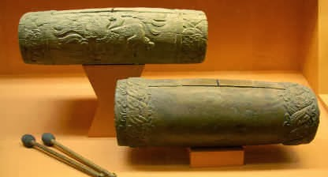

Básicamente los instrumentos autóctonos del México prehispánico se pueden agrupar en dos conjuntos mayores: los de percusión y los de aliento. Dentro de los instrumentos de perscusión se encuentran los idiófonos y los membranófonos, en tanto en los de aliento se encuentran los aerófonos. Los idiófonos son instrumentos musicales que generan sonido al vibrar el propio instrumento. El chicahuaztli es un ejemplo de idiófono azteca.
Los idiófonos son los instrumentos musicales que generan el sonido a través de su propio cuerpo al vibrar. Algunos ejemplos son el chicahuaztli, suena con un golpe que se va produciendo indirectamente. Existen de varios tamaños, formas y colores, según se usen para venerar a sus dioses y diosas.
El ayauhchicahuaztli, era una tabla de sonajas que procuraba la lluvia. Este idiófono evidenciaba que tenían unos conocimientos musicales superiores, pues reproducían sonidos afinados con intervalos de segunda mayor, tercera mayor, o menor, cuarta o quinta.
El teponaztli hecho de tronco de madera ahuecado, con dos lenguas que forman una H. Se tocaba con dos baquetas de punta de hule.
Gabriel Edilberto Ramírez Vázquez Nl: 33